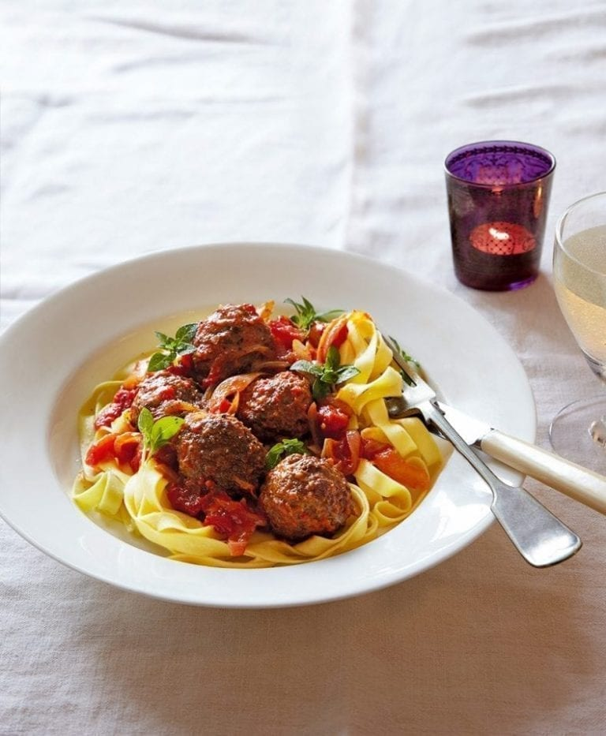

Tagliatelle and Meatballs

Vegetarian Tagliatelle and Meatballs
This is a recipe for tagliatelle with tomato sauce and vegetarian meatballs
Ingredients
- some good olive oil
- half a medium-sized onion
- 3 cloves of garlic
- tin of chopped tomatoes
- vegetarian meatballs
- dried Italian herbs
- salt
- dried tagliatelle
Steps
- Heat some olive oil in a saucepan
- Add the onion, finely diced, and add the chopped garlic after a couple of minutes.
Saute until translucent.
- Add the tomatoes and meatballs, a shake of herbs and salt to taste, then
simmer for 30 minutes.
- In another pan of salted boiling water, add the tagliatelle and boil for 10
minutes
- Drain the tagliatelle and top with the sauce and meatballs. Enjoy!